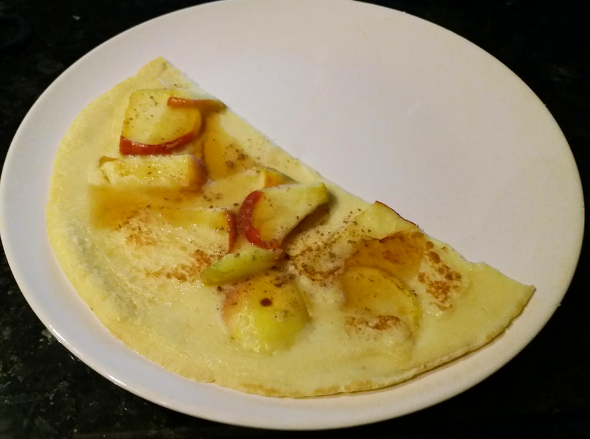

pannenkoek

Bereidingsduur: 20 minuten
Aantal personen: 2
Ingrediënten:
125 gram bloem
2 eieren
250 mililiter melk
1 appel
boter
naar smaak kaneel
naar smaak peper en zout
125 gram bloem
2 eieren
250 mililiter melk
1 appel
boter
naar smaak kaneel
naar smaak peper en zout
Instructies:
1. Snijd de appel in schijfjes. Pak een kom en doe hier de bloem, de eieren, de melk en een snufje zout in.
2. Roer het goed door elkaar tot er geen klonten meer in het beslag zitten. Zorg ervoor dat het vloeibaar is! Als dit niet zo is doe er dan nog wat melk bij.
3. Verhit boter in een goede koekenpan. Giet het beslag in de pan en bedek de hele bodem. Doe er snel wat stukjes appel of stukjes spek op. Wanneer de bovenkant van het beslag een beetje gestold is, mag je de pannenkoek omdraaien tot deze ook klaar is. Voeg naar smaak kaneel, stroop, zout of peper toe.
1. Snijd de appel in schijfjes. Pak een kom en doe hier de bloem, de eieren, de melk en een snufje zout in.
2. Roer het goed door elkaar tot er geen klonten meer in het beslag zitten. Zorg ervoor dat het vloeibaar is! Als dit niet zo is doe er dan nog wat melk bij.
3. Verhit boter in een goede koekenpan. Giet het beslag in de pan en bedek de hele bodem. Doe er snel wat stukjes appel of stukjes spek op. Wanneer de bovenkant van het beslag een beetje gestold is, mag je de pannenkoek omdraaien tot deze ook klaar is. Voeg naar smaak kaneel, stroop, zout of peper toe.
Variatietip: gebruik eens spekreepjes in plaats van appel